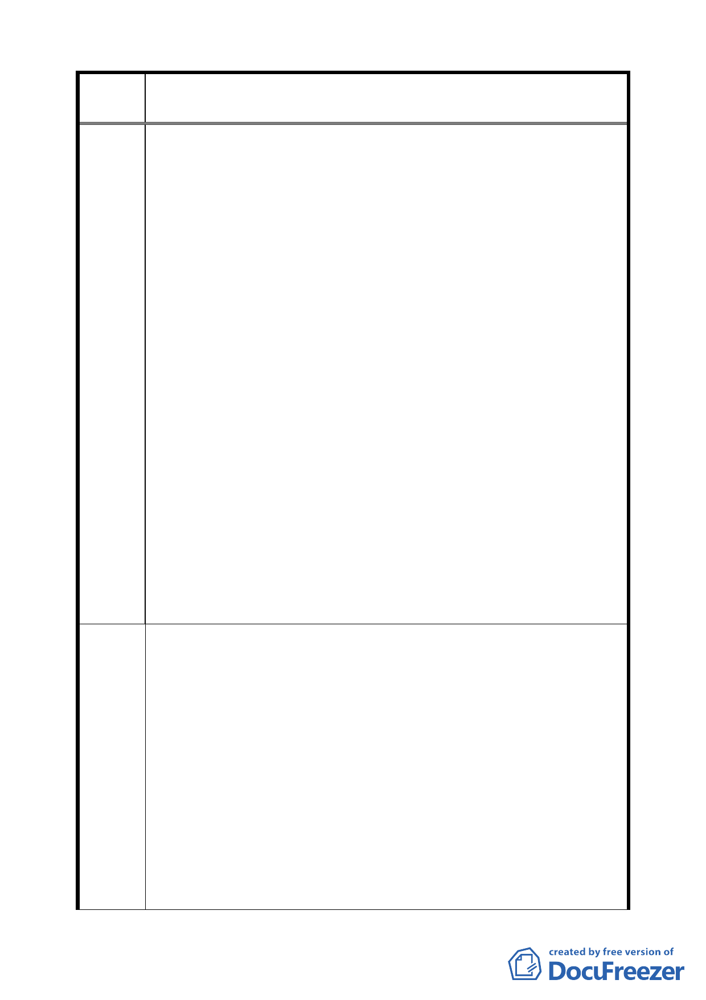

變更臺北市信義區信義段三小段五三之三四地號人行步道用地為
案 名 道路用地計畫案
貴委員會審議變更臺北市信義區信義段 3 小段 53-34 地號人行步道
用地為道路用地計畫案，為顧及本人依原有都市計畫規定所價購
土地（信義段 3 小段 43-5 地號）之成本，要求退縮 1.5 公尺無遮
簷人行道供通行，用以佈設完整之人行步道系統乙節，敬請考量
本人用地損失給予容積補償。本案發展局提案之周延性應整體思
考，不宜以少數地主之意見以偏蓋全，做出錯誤決定而影響整體
規劃。
本案原規劃公布之都市計畫採取人車分道系統，是明智及人本的
決定；只因臨接系爭部分基地不能出入停車，無法申請建築而予
變更實有再商榷多予考量的地方。若依本項提案變更為道路使
陳情理
由
用，固然解決臨接步道七塊基地申請建築問題，但是每一基地建
築一棟房屋就有七處車道出入口，試問其與人行道及寬度 5 公尺
之車道之動線衝突點，將致使行人通行無法有所保障？雖然都計
審議委員也顧慮到安全，做了速限 20 ㎞/h、單行道、跳動路面、
40 公分高自動柵門等措施，試問該道路柵門只有讓車子暫停的功
能而已，限速如何管制落實？跳動路面更增加路面品質與維護不
良？15 公尺計畫道路進入 5 公尺車道與 5 公尺車道駛出 15 公尺
計畫道路的衝突，其又是行車又是行人，實在安全堪慮啊！！所
以本方案只能說是發展局所提出來的幾個替選方案中比較好的一
個，僅能說是中策絕非最佳方案，是故應是兼顧原有規劃精神又
能達到安全之目的，以及無礙各基地建築始為上策。
本人依現行都市計畫可建築之規模購入土地，依現行法規完全可
以自行申請建築，如以擬議變更方案要本人土地退縮 1.5 公尺提供
公眾通行，只因處理都市計畫之瑕疵而剝奪本人之使用權，於理、
於法、於情實有欺壓百姓之嫌。為配合解決土地重劃之無奈，對
於本人使用權之之損失，政府理應合理補償容積以免增加土地成
建 議 辦 本，應可比照法定騎樓方式給予補償。
法 至於本案之最佳方案，其實在發展局與地主的協調之方案中，已
有給予 5％之容積獎勵而整合各基地成為大街廓整體開發的構
想。再加上獎勵開發時程之 5％之容積獎勵，當可促進系爭基地臨
接計畫道路之基地協調整合大街廓基地聯合開發建築。則 53-38
地號人行步道東側 43、43-1、-2、-3、-4、-5、-6、-7、-8 等九筆
地號，可整合成 L 型之大基地面向 15 公尺計畫道路建築。人行步
11